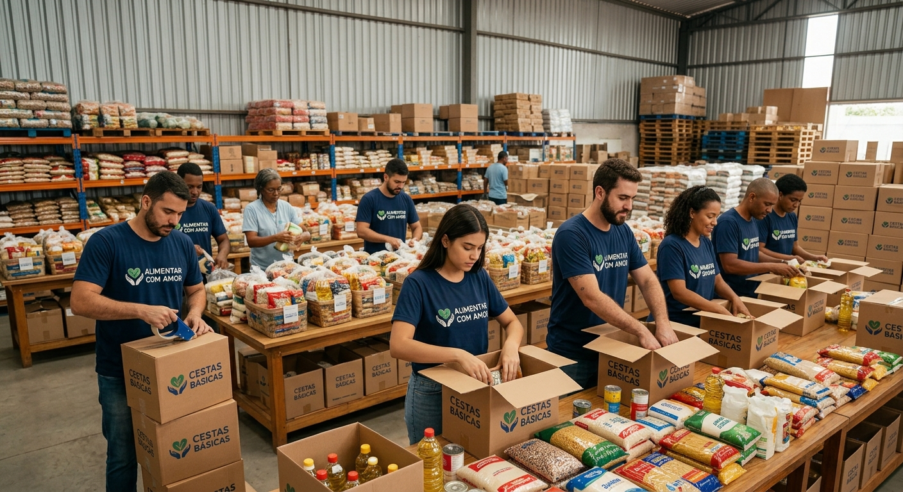
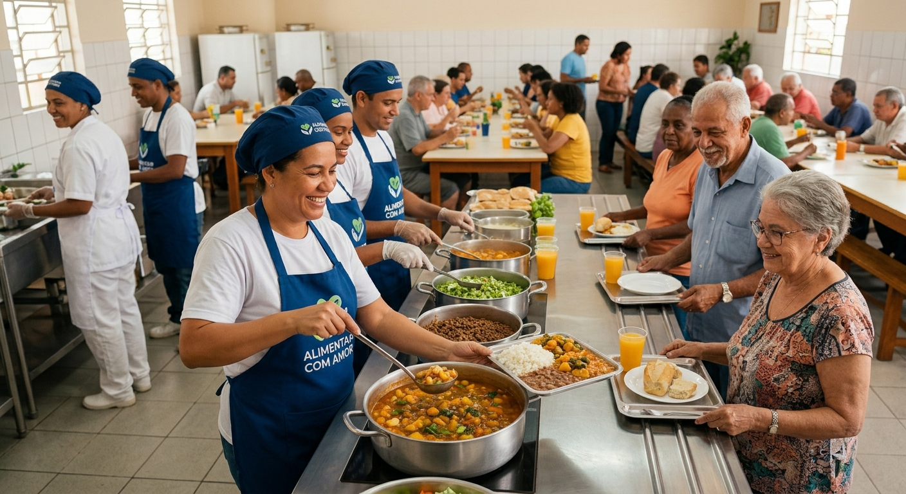

Missão
Garantir alimento de qualidade e dignidade a famílias em vulnerabilidade, por meio de doações e trabalho voluntário.
Somos uma ONG que leva cestas básicas, refeições e hortas comunitárias para famílias em situação de insegurança alimentar. Você pode ajudar doando ou sendo voluntário.


A Alimentar com Amor nasceu da união de vizinhos que perceberam que muitas famílias do bairro estavam passando o dia sem uma refeição completa.
Hoje reunimos voluntários, doadores e comerciantes locais para que ninguém fique sem comida, e para que cada doação seja prestada com transparência.
Garantir alimento de qualidade e dignidade a famílias em vulnerabilidade, por meio de doações e trabalho voluntário.
Ser referência em combate à fome na nossa região, com uma rede de apoio forte e presente em cada bairro.
Começamos em 2019 distribuindo marmitas aos sábados. Em poucos anos, abrimos a cozinha comunitária e a horta urbana, e hoje atendemos famílias de vários bairros.